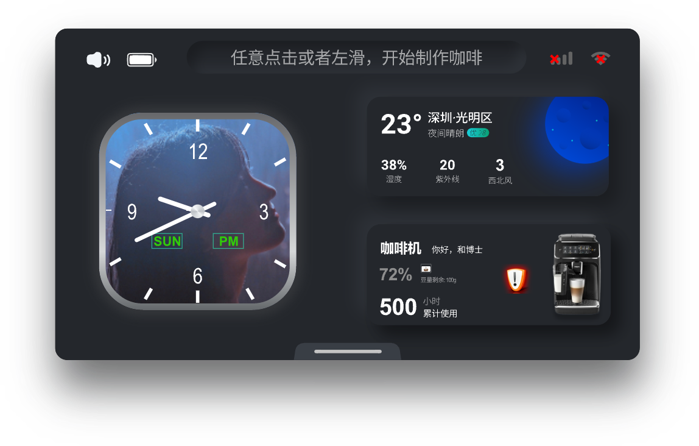
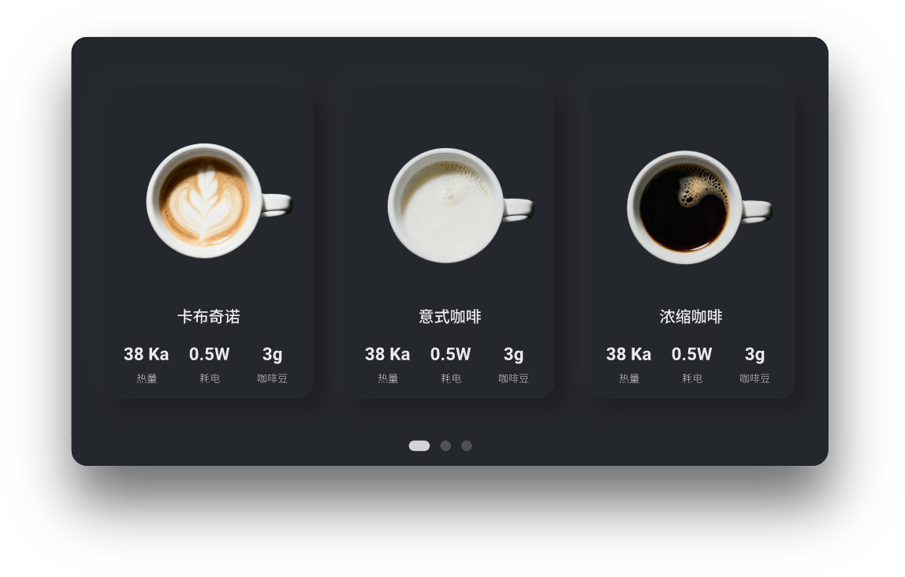
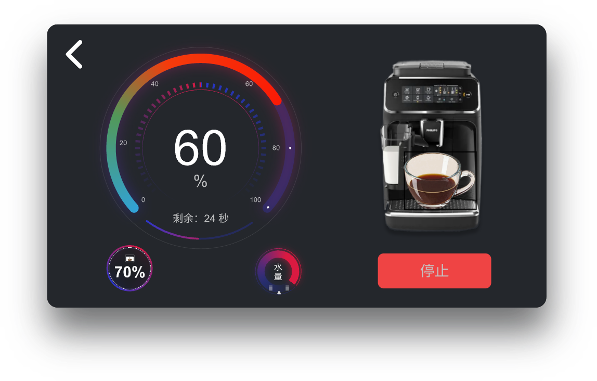

咖啡机平台方案
咖啡机案例展示如何把 UI、传感器、执行器、算法、通信和异常处理组合为完整产品流程。 页面不是孤立界面，而是设备状态机的可视化入口：用户操作必须与水路、温控、压力和安全联锁保持一致。
常驻页面


常驻层可组合自检、身份鉴权、节能、时间、天气、动态背景、状态图标和快捷设置。 状态数据由业务层统一发布，页面只订阅经过归一化的视图模型，避免每个控件直接读取硬件。
void coffee_home_update(const coffee_status_t *status)
{
ui_set_temperature(status->water_temperature_c);
ui_set_supply_level(COFFEE_SUPPLY_BEANS, status->bean_percent);
ui_set_network_state(status->network_state);
ui_set_alarm_visible(status->alarm_count != 0);
}
工作页面

工作流程可拆为烘焙度识别、可编程压力控制、精准温控、TDS 自适应萃取和奶泡控制。 每个步骤都应定义进入条件、目标值、超时、可取消点和故障转移，而不是由进度动画推断设备状态。
阶段 |
主要输入 |
主要输出 |
|---|---|---|
预热 |
温度、流量、水位、门盖/水箱状态 |
加热器和泵控制 |
研磨与压粉 |
豆量、研磨档位、电机电流、编码器 |
电机速度和堵转保护 |
萃取 |
压力、温度、流量、TDS、时间 |
泵、阀、加热功率曲线 |
完成 |
产量、耗时、告警和用户配方 |
结果展示、清洁提醒和配方记录 |
用户反馈

评价和口味记忆应保存“配方版本 + 实际过程数据 + 用户评分”，而不是只记录星级。 下次应用偏好时仍需经过温度、压力和物料余量等安全边界裁剪。
异常处理
异常页面覆盖除垢/清渣、添豆/奶/水和引导式排障。错误信息应包含：当前影响、用户可执行动作、 设备自动处理状态和退出条件。涉及加热、压力、电机堵转或门盖联锁的故障必须由控制层先进入安全态， UI 不能提供绕过保护的继续按钮。
模块分层
UI 层：页面、控件、动画、输入事件和无障碍状态反馈。
品类 CBB：配方、流程编排、故障映射、维护周期和用户偏好。
能力 CBB：视觉、音频、IMU、电机控制、通信、日志和安全存储。
HAL/BSP：ADC、PWM、QDEC、GPIO、IIC、SPI、LCD 及实际板级器件驱动。
联调顺序建议从单个传感器和执行器开始，再验证闭环控制，最后接入 UI 与联网功能。每一步都保留日志、 超时和人工停止入口，才能在整机问题出现时快速定位所属层级。